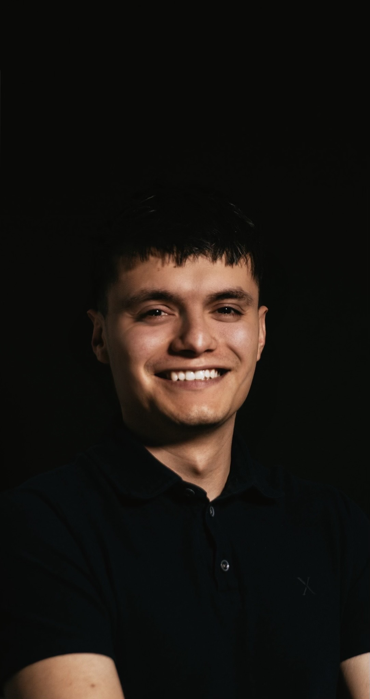

About Me
I’m currently a Software Engineering Fellow at The Marcy Lab School, a non-traditional, tuition-free program built on the idea that potential isn’t defined by a traditional path. Before making the shift into tech, I studied Political Science and Finance at Saint Peter’s University; an experience that shaped how I think about systems, people, and decision-making. My path into software engineering has been anything but linear. It’s been a series of intentional risks, moments of uncertainty, and a commitment to figuring things out as I go. That journey continues to influence how I approach my work: thoughtfully and with an awareness of the real-world context behind the code. I’m currently focused on strengthening my foundation in SQL, PostgreSQL, and database design, with a growing interest in how data moves through systems—how it’s structured and ultimately used to tell a story or support a decision. In a short period of time, I’ve built a strong foundation across the stack, working with JavaScript, HTML, CSS, and backend development using Node and Express. By May 2026, I will have completed my training as a full-stack engineer—an outcome that reflects both the intensity of my learning and the consistency behind it. I’m drawn to work that sits at the intersection of logic and impact. I tend to approach engineering with a quiet curiosity—asking why something works the way it does, and how it could work better. I care about building systems that are intentional and useful to the people interacting with them. I’m especially interested in working with teams that value different perspectives and unconventional paths. I bring a mix of analytical thinking and adaptability-and I’m always looking to keep learning and contribute in a way that feels meaningful.
Selected Work
Featured Project
ReadMe Maybe? is a collaborative, single-page book discovery application built to make exploring new reads intuitive and engaging. Developed in a team of two, the app allows users to search by title, author, or genre, browse curated categories, receive recommendations, and save books for later—all within a seamless, uninterrupted experience. Powered by the Open Library API, it dynamically fetches and renders data in real time while handling inconsistencies like missing images or descriptions. The project emphasizes clear separation of concerns across the codebase and thoughtful UX decisions, including modal-based interactions, reduced visual clutter during search, and client-side persistence using localStorage, resulting in a responsive and intentional user experience.
View Project →
Rock Paper Scissors
A browser-based implementation of the classic game, focused on clean UI interactions and simple game logic.
View Project →Recipe Card
A structured layout project emphasizing semantic HTML and clean CSS styling for content presentation.
View Project →Personal Portfolio
A minimal, editorial-style portfolio designed to present work with clarity and intention.
View Project →Interested? Let’s Connect.
Whether you have a question, an opportunity, or just want to say hello, my inbox is always open.